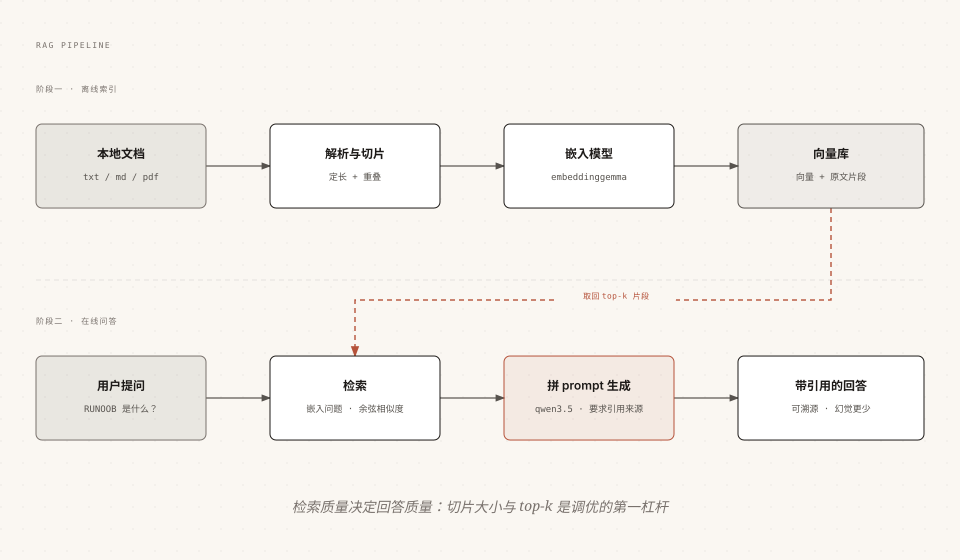

Ollama RAG：ローカルプライベート知識ベースQ&A
この章では、これまで学んだ埋め込み、検索、生成の機能を組み合わせて、実際に使えるアプリケーションを作ります。あなたのドキュメントをローカルモデルに与え、あなたの資料だけに基づいて回答し、出典を明記させます。
完全なコードは100行未満で、外部ベクトルライブラリへの依存はゼロ。コピーするだけで実行できます。
要件分解と技術選定
まず問題を明確にします。大規模モデルはあなたのハードディスク内の資料を知らないため、直接質問しても捏造された回答しか得られません。RAG（検索拡張生成）の考え方は「持ち込み可の試験」です。まず資料から関連する断片を検索し、その断片をプロンプトに組み込んで、モデルにそれに従って回答させます。

技術選定は「最小依存」の原則に従います：
| 工程 | 選定 | 理由 |
|---|---|---|
| 埋め込みモデル | embeddinggemma | サイズが小さく、ローカルで高速。代替候補は qwen3-embedding |
| 生成モデル | qwen3.5:4b | 中国語に強く、16GBメモリで動作可能 |
| ベクトルストレージ | Pythonリスト + コサイン類似度 | 依存ゼロで、教育用途に明快。データ量が多い場合はChromaなどの専門ライブラリに交換 |
| ドキュメント形式 | txt / md | プレーンテキストで原理を説明可能。PDFについては文末の拡張を参照 |
2つのモデルをプルする必要があります：
ollama pull embeddinggemma ollama pull qwen3.5:4b
EmbeddingGemma は Google がオープンソース化した軽量の多言語テキスト埋め込みモデルで、テキストをベクトルに変換するために特化しています。ローカルデバイスでのオフライン展開に非常に適しており、Ollama はこのモデルを適合・パッケージ化済みなので、直接プルして使用できます。
ステップ1：ドキュメント解析とチャンク分割
モデルのコンテキストは有限であり、ドキュメント全体を入れることはできないため、小さな断片に分割する必要があります。チャンク分割戦略は最もシンプルな「固定長 + オーバーラップ」を使用します。各断片は300字、隣接する断片は50字ずつ重複させ、重要な文が切断されるのを防ぎます。
サンプル
import os
def load_chunks(folder, size=300, overlap=50):
"""フォルダ内のすべてのtxt/mdファイルを読み込み、出典マーク付きの断片に分割する"""
chunks = []
for name in sorted(os.listdir(folder)):
if not name.endswith(('.txt', '.md')):
continue
path = os.path.join(folder, name)
text = open(path, encoding='utf-8').read().strip()
# スライディングウィンドウ分割：ステップ幅 = size - overlap
step = size - overlap
for i in range(0, len(text), step):
piece = text[i:i + size].strip()
if len(piece) > 20: # 短すぎる断片をフィルタリング
chunks.append({'file': name, 'text': piece})
return chunks
ステップ2：ベクトル化と検索
すべての断片とユーザーの質問をベクトルに変換し、コサイン類似度を使用して質問に最も関連する top-k の断片を見つけます。
サンプル
EMBED_MODEL = 'embeddinggemma'
def embed(texts):
"""ベクトルを一括生成する（入力はリスト、出力はベクトルのリスト）"""
result = ollama.embed(model=EMBED_MODEL, input=texts)
return result['embeddings']
def cosine(a, b):
"""コサイン類似度：1に近いほど類似している"""
dot = sum(x * y for x, y in zip(a, b))
na = sum(x * x for x in a) ** 0.5
nb = sum(x * x for x in b) ** 0.5
return dot / (na * nb)
def search(question, chunks, vectors, top_k=3):
"""検索：最も関連するk個の断片とその類似度を返す"""
q_vec = embed([question])[0]
scored = [
(cosine(q_vec, v), c)
for v, c in zip(vectors, chunks)
]
scored.sort(key=lambda x: -x[0])
return scored[:top_k]
embeddinggemma が出力するのは L2 正規化ベクトルです。ここでは原理を明確にするために完全なコサイン公式を残していますが、ドット積に置き換えても結果は同じです。
ステップ3：プロンプトを組み立て、引用付きの回答を生成
検索された断片を出典番号とともにプロンプトに書き込み、モデルに「資料のみに基づいて回答する」ことを明確に要求し、引用を明記させます。
サンプル
GEN_MODEL = 'qwen3.5:4b'
def answer(question, chunks, vectors):
hits = search(question, chunks, vectors, top_k=3)
# 断片と出典番号をコンテキストに連結する
context = '\n\n'.join(
f'[資料{idx}] （{c["file"]} より）\n{c["text"]}'
for idx, (score, c) in enumerate(hits, 1)
)
prompt = f'''以下の資料のみに基づいて質問に回答し、使用した資料番号を明記してください。
資料が回答に不十分な場合は、直接「わからない」と説明してください。
資料：
{context}
質問：{question}'''
response = chat(
model=GEN_MODEL,
messages=[{'role': 'user', 'content': prompt}],
options={'temperature': 0.2}, # 低い温度で、創造的な逸脱を減らす
)
print(response.message.content)
print('\n参考出典：')
for idx, (score, c) in enumerate(hits, 1):
print(f' [資料{idx}] {c["file"]}（類似度 {score:.3f}）')
全体を実行：メインプログラムの入口
サンプル
if __name__ == '__main__':
folder = 'docs' # あなたの txt/md ドキュメントを docs フォルダに入れてください
chunks = load_chunks(folder)
# オフラインインデックス：すべての断片を一度にベクトル化
print(f'インデックス作成中：{len(chunks)} 個の断片...')
vectors = embed([c['text'] for c in chunks])
print('インデックス作成が完了しました。\n')
# オンラインQ&Aループ
while True:
q = input('質問（exit で終了）：').strip()
if q.lower() == 'exit':
break
if q:
answer(q, chunks, vectors)
print()
資料を準備して実行します：
mkdir docs cp RUNOOB-python-notes.md docs/ python rag.py
出力：
$ python rag.py 正在索引 42 个片段... 索引完成。 问题（exit 退出）：Python 的切片是什么？ Python 切片是用 [start:stop:step] 从序列截取子序列的语法 [资料1]。 例如 s[1:4] 取索引 1 到 3 的字符 [资料2]。 参考来源： [资料1] RUNOOB-python-notes.md（相似度 0.712） [资料2] RUNOOB-python-notes.md（相似度 0.668）
回答末尾の出典表記に注目してください。すべての文があなたの docs ディレクトリ内の具体的なファイルに遡れます。これこそが RAG が「モデルに直接質問する」ことに対する中核的な価値です。
効果のチューニングとよくある質問
RAG の効果が良くない場合、8割は生成ではなく検索の段階が原因です。チューニングのレバーを影響力順に並べます：
| レバー | デフォルト値 | 調整の方向性 |
|---|---|---|
| チャンクサイズ size | 300字 | 回答が断片的すぎる場合は大きくします。大きすぎると検索精度が下がります。経験上の目安は 200〜500 |
| オーバーラップ overlap | 50字 | 文が頻繁に切断される場合は大きくします |
| 検索件数 top_k | 3 | 資料が密集している場合は増やしますが、より多くのコンテキストを消費します |
| 類似度しきい値 | 未有効 | 類似度が低すぎる断片をフィルタリングし、無関係な干渉を減らします |
| 生成温度 | 0.2 | 低めに維持します。知識ベースに創造性は不要です |
高頻度の問題の早見表：
| 現象 | 原因 | 対策 |
|---|---|---|
| 回答が資料と無関係 | 検索がヒットしていない | チャンクが小さすぎる/大きすぎるかを確認し、質問の言語と資料が一致していることを確認します |
| モデルがまだ回答を捏造する | プロンプトの制約が不十分 | 「資料のみに基づく」という表現を強化し、検索できない場合は直接「わからない」と回答させます |
| インデックス作成が特に遅い | 断片が多すぎて1件ずつ埋め込みしている | バッチの embed を使用します。ドキュメント量が多い場合は専門のベクトルライブラリとインクリメンタルインデックスに切り替えます |
| 長いドキュメントでは回答が悪化する | 重要な情報が断片化されている | 単純な固定長ではなく、見出し/段落などの意味的な境界でチャンク分割します |
その他の拡張本番化のロードマップ：ドキュメント量が数万に達する場合や PDF 解析が必要な場合は、「リストベクトルライブラリ」を Chroma のような専門のベクトルライブラリ（永続化と高効率な近傍検索を提供）に置き換え、pypdf で PDF テキストを抽出します。その他のコードの骨格は変わりません。これこそが本記事で各工程を分離した意義です。
クリックしてノートを共有
<p style="font-size:14px;">ノートは本記事の内容を拡張したものである必要があります！</p><br> <p style="font-size:12px;"><a href="../tougao.html" target="_blank">記事投稿は、こちらをクリック</a></p> <p style="font-size:14px;"><a href="../w3cnote/runoob-user-test-intro.html" target="_blank">招待コードの取得方法</a></p> <h3 class="text-muted"><i class="fa fa-info-circle" aria-hidden="true"></i> ノートを共有する前に<a href=";.html" class="runoob-pop">ログイン</a>が必要です！</h3> <p><a href="../w3cnote/runoob-user-test-intro.html" target="_blank">招待コードの取得方法</a></p>